Yunik FAQ
Q: I'm using One Click Feature to install Demos, but for some reason it don't setup the demo!!
A: Depending of your server settings, this feature may not working. If this happens please setup the demo manually. Just follow the next steps here!
Q: I'm using One Click Feature to install Demos, but for some reason it don't leave the 0% (Database Reset...)
A: Simply open the wp-config file, located in the WordPress installation directory, and add this line at the bottom of it error_reporting(1);
Q: I'm using One Click Feature to install Demos, but when i click on OK i get a whit screen!!
A: Easy! Refresh the page :)
Q: When installing this theme, I got the following error: "Are you sure you want to do this? Please try again." What should i do to fix this?!
A: Just follow the next steps here!
Q: When installing this theme, I got the following error: "Warning: POST Content-Length of xxxxxxx bytes exceeds the limit of xxxxxx bytes in Unknown on line 0. Are you sure you want to do this? Please try again." What should i do to fix this?!
A: Just follow the next steps here!
Q: I'm using Child-Theme option and my website's not changing when I make some modification...
A: If you changed the name from the theme folder, you'll have to follow the next steps here!
Getting started
We assume you have your own WordPress installation, so let's get started! if not, and if you don't know how to do that, check this link
1. Installing the themetop
There are 2 ways to install wordpress theme: upload unzipped theme via FTP or use the zipped file directly by on the wordpress theme installer .
You have to setup Wordpress first. (download it at : link)
1.1 Upload via FTP
- Log into your site via FTP (if you don't have any FTP program you can use FileZilla ).
- Browse to your folder located at yoursite.com/wp-content/themes
- Upload the unzipped theme folder
- Login to Wordpress, and on Left Menu go to Appearance -> Themes
- Find & Activate the theme
1.2 Upload via Wordpress
- Login to Wordpress
- Go to Appearance -> Themes
- You will see Install Theme tabs. Click Upload right below the tab
- Click choose file, browse to theme folder and choose the file Yunik-installable.zip, click Install and wait for a second.
- Activate the theme
This happen because your server don’t have enough php memory to install the theme via Wordpress upload. You have 3 ways to fix this.
If you notice the following warning when you try installing the theme with the zip file "Warning: POST Content-Length of xxxxxxx bytes exceeds the limit of xxxxxx bytes in Unknown on line 0. Are you sure you want to do this? Please try again." it is probably the configuration of your php.ini. If you are installing the theme locally please configure your php.ini file and change value of the variables upload_max_filesize and post_max_size to something bigger like 32M. If you are installing the theme online you should contact your web host provider and ask them for this changes.
In case you change the folder's name, you need to edit the themes-child style.css file (located < in your themes folder >/Yunik-child/style.css) and set the the exact same name (case-sensitive) in lines 5 and 8 in order to use the child theme.
2. Import Demostop
2.1 Import Via One Click Feature
The theme comes with Awesome Demo pages, just like the theme preview that allow you to have some dummy content into your site to help you get started with the theme.
All demos are available with our Demo importer.What you need to do? Just 1 click on the demo that you love more. Nice and easy!
2.2 Import Demo Manually
If you encountered any issue installing the demo via one click feature, or if you want to import more than one demo into your wordpress installation, You neet to install them manually. For that, inside the Yunik Download package, you just need to choose the demo from the folder Preview Demo Contents -> 15 Yunik Demos
Follow the next steps. It's important follow this order!
- Choose your Demo from the folder Preview Demo Contents -> 15 Yunik Demos
- First Setup contents.xml file. Login to Wordpress, in Left Menu go to Tools -> Import
- Choose Wordpress, if the plugin haven't not been installed , the popup window will show up and just click Install Now.
- Click Activate Plugin & Run Importer
- Now go Yunik Options and Import options.xml file
- Now go Yunik Style Options and Import styel_options.xml file
- Time to import all portfolios. For that go to Cube Portfolio -> Import/export
- All done! Enjoy
Check This Video
2.3 Get Sections from other Demos
Imagine that you like Demo 1, but you want some sections from demo 5 and demo 8 too. For that you can do that, we included in the theme separated txt files with all pages in Yunik theme. Check them in the Yunik package, folder Preview Demo Contents -> Predefined Layouts
How to do it? Check this following video
3. Yunik Optionstop
Yunik comes with a very powerful options panel. After the theme is installed you can access the options panel by logging into the Wordpress dashboard and clicking Yunik Options. Go to menu Appearance -> Yunik Options and discover it!
Yunik Options panel is meant for the empowering of your theme with some visual enhancements described below.
Some cool stuff over our powerfull Options Panel:
- Adding logos;
- Header types;
- Widgets;
- Seo Options;
- Newsletter options;
- Language Settings;
- Social Icons;
- Custom css;
- Etc...
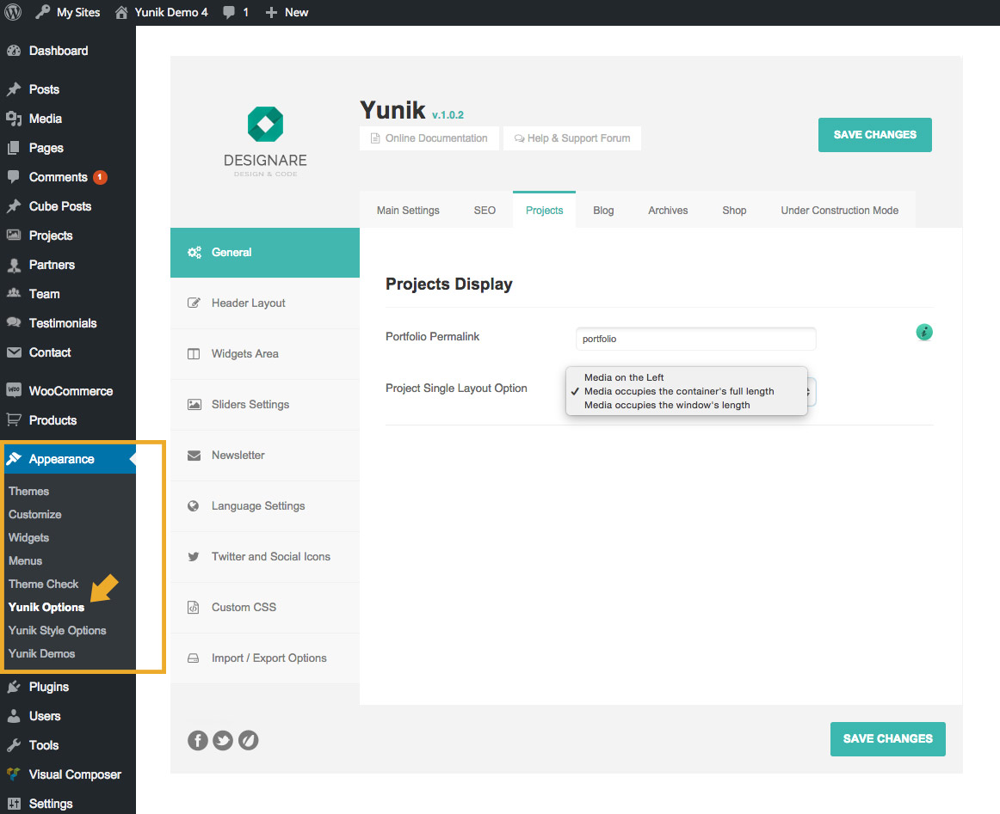
IMPORTANT: Style options, like color changes, styles, backgrounds, etc, are set over the next section Yunik Style Options.
4. Yunik Style Optionstop
Yunik allows you to create different styles in this new Style Options Panel. You will be able to make your own styles with lots of features and options for customizing your website.
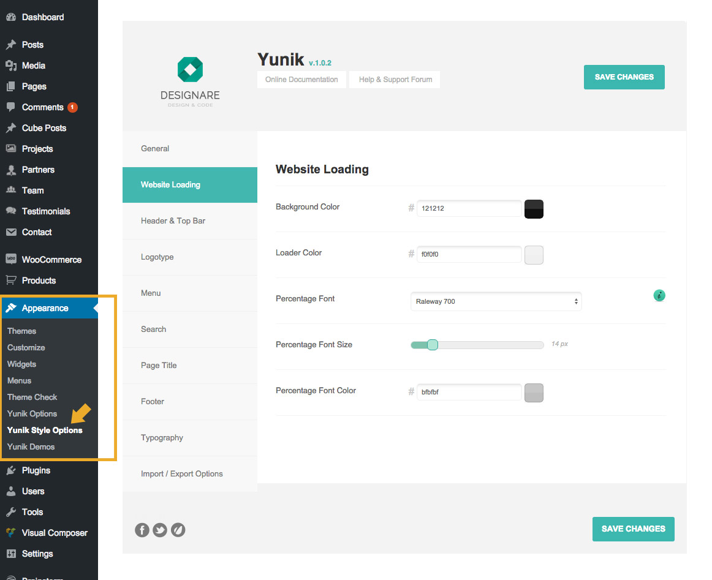
5. One / Multipage Systemtop
Yunik allow you have one or multi page websites. The system is easy, we use normal wordpress pages, that works like pages (multipage) or sections (one page). On each page you create, you need to choose the template for your page. One Page Template or Multi Page Template
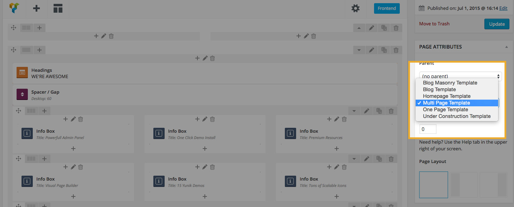
After create your pages/sections, add them in the wordpress menus. In case of one page site, your pages will be sections, and the order for that you will present them will follow the order in the wp menus. For example HOME - ABOUT - SERVICES
Get More info here on One Page Templates or the Multipage Template.
6. Yunik Included Pluginstop
In this theme you can find the most featured plugins:
- Ultimate Addons
- Cube Portfolio
- Revolution Slider
- Visual Composer
- Contact Form 7(with Captcha)
- WPML (compatible) *
1. So you can use these plugins, you'll need to upload the yunik-installable into your server through an FTP program such as Filezilla.
2. On your wordpress admin panel, you need to go to Plugins Section and activate them.
3. When active, they'll appear on your Custom Post Types menu.
4. Now you'll be able to use those nice plugins on your website. Just follow the documentation so you can use it well.
* WPML plugin isn't provided with this theme! For you to have it running on your installation, you should buy the license here: http://wpml.org
7. Visual Composertop
Yunik comes with the awesome Visual Composer plugin.
Visual Composer page builder plugin for WordPress on CodeCanyon – take full control over your WordPress site with Frontend and Backend editors. Build any layout you can imagine with drag and drop page builder plugin – no programming knowledge required.
Popular Links
8. Ultimate Addonstop
Visual Composer is a basic drag and drop page builder plugin and a modeling tool that enables code-free composition of UI elements, Enterprise Services, and reusable components to rapidly create and adapt rich user interfaces on your WordPress website.Yunik comes with the Ultimate Addons plugin, that comes like a feature to enhance Visual Composer plugin with more awesome skills, for getting your website top-noch.
NOTE: You can, and should read further more about how to use it here.
8.1 Set up Google Fonts
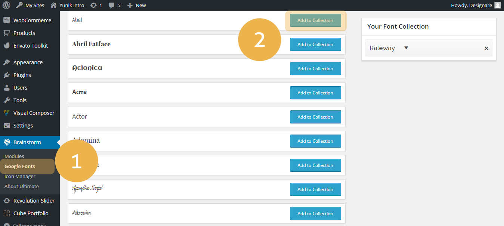
- 1. Go to BrainStorm Custom post type
- 2. Click Google Fonts
- 3. Add the font you want to the collection
- 4. DONE! Now you can use them inside the Yunik Style Editor Panel.
9. Designare Visual Composer Shortcodestop
As Visual Composer comes as a basic drag and drop page builder plugin and a modeling tool Designarethemes also got down to work and implemented some nice plugin addon features like:
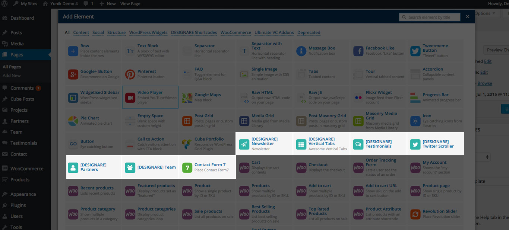
10. Using Page templatestop
- One Page Template
- Blog Masonry Template
- Blog Template
- Home Page Template
- Multipage Template
- Under Construction Template
Yunik come with 6 templates
To use the page templates, simply create a new page in Pages -> Add new and choose the template you want to use for that page in Page Attributes box.
You can also select the Page Layout for your page. You can select the Options Fullwidth, Left Sidebar and Right Sidebar.
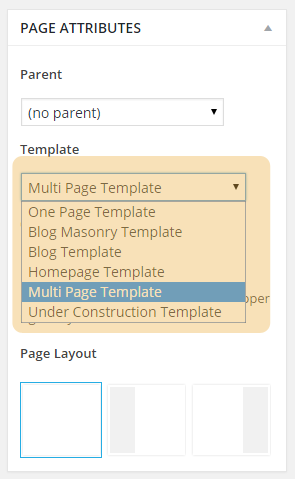
10.1 Homepage Template
You'll find three ways of setting up your Homepage template:
Slider
1. Select Homepage Template.
2. Scroll a bit down to the end of the page, and go to Homepage Style and select your previous created Slider (Revolution Slider).
3. Set Publish / Update.
Now you'll have your slider on your Homepage.
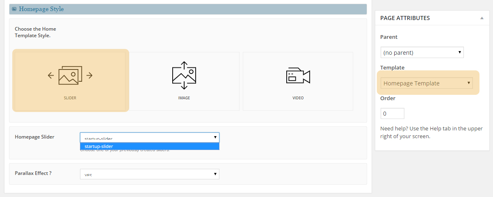
Image
1. Select Homepage Template.
2. Scroll a bit down to the end of the page, and go to Homepage Style and select your Image Settings.
3. You can set the options you want to that page.
4. Set Publish / Update.
Now you'll have the image with your settings as your Homepage.
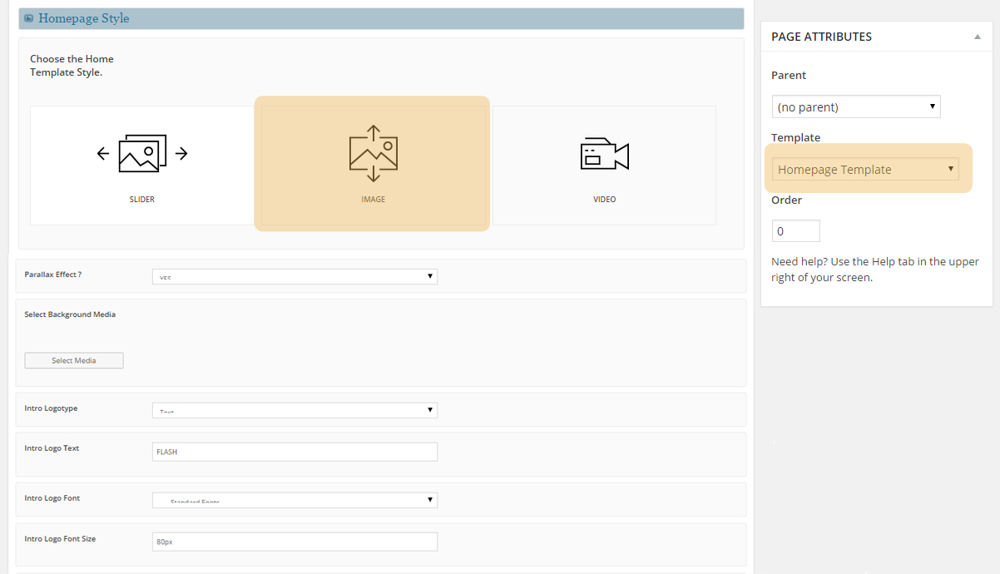
Video
1. Select Homepage Template.
2. Scroll a bit down to the end of the page, and go to Homepage Style and select your Video Settings.
3. You can set the options you want to that page.
4. Set Publish / Update.
Now you'll have the Video on your Homepage running on the with your settings.
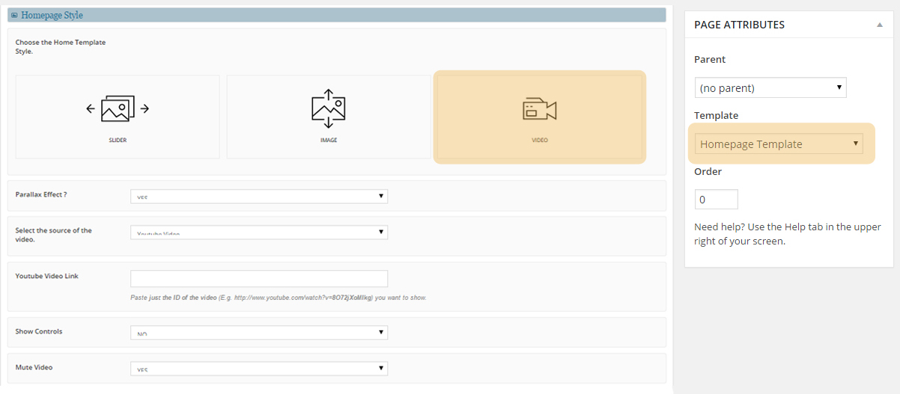
10.2 Blog Template & Blog Masonry Template
The options you'll find below works for the two kind of blog templates.
1. Select Blog Template or Blog Masonry Template.
2. Scroll a bit down to the end of the page, and go to Blog Style and set your options relative to the Blog Template or Blog Masonry Template.
3. Click Publish / Update.
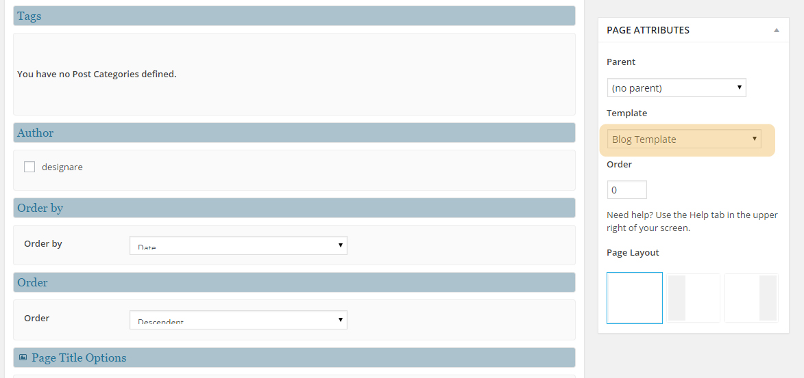
10.3 One Page Template
This is how you can implement your One page website:
1. Create a new page.
2. Select One Page Template.
3. IMPORTANT NOTE: The page you've created will work as a section for your One Page website.
4. Now go to Appearance > Menus and select the pages you've created previously as One Page Template and order the menu according to the way you want to display your pages (sections of the One Page Template) and save the Menu.
This is how you will get your One Page website. Easy!!!
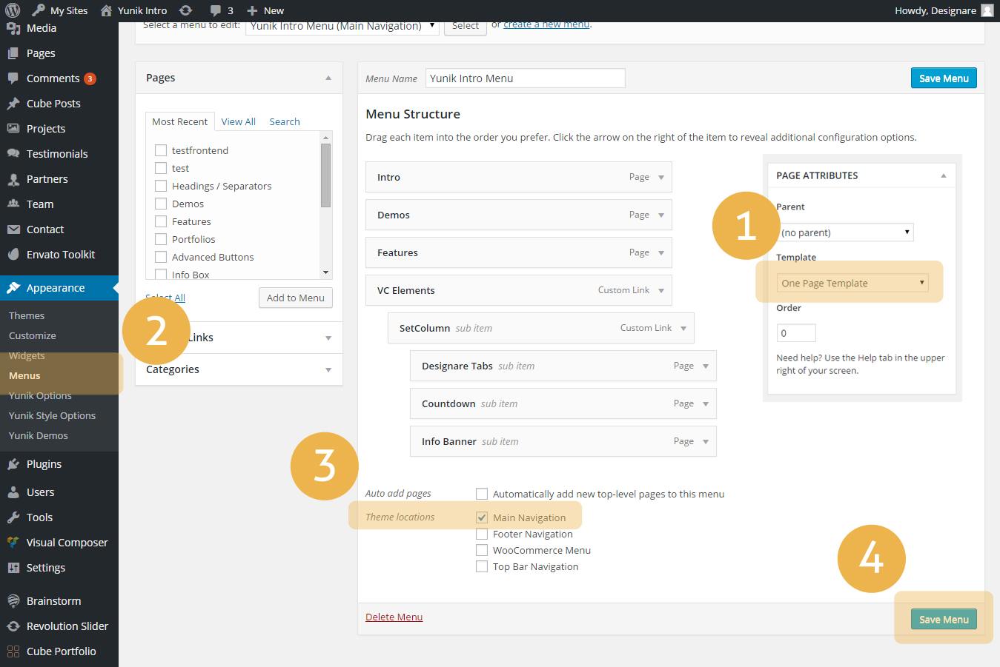
10.4 MultiPage Template
This is the same as the One Page Template, but with this template you'll have a default style website with the pages each one for each link.
10.5 Under Construction Template
1. Select Under Construction Template.
2. Scroll a bit down to the end of the page, and go to Homepage style and select your settings.
3. You can set the options you want to that page.
4. Set Update.
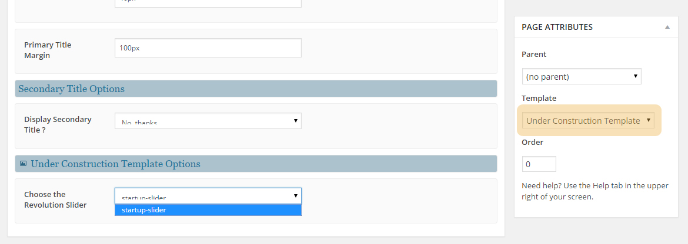
5. Now that you've created the page for the Under Construction Page, now you should go to Appearance > Yunik Options > General > Under Construction Page and set the Under Construction Mode to ON.
6. Under this same section select the Under Construction Page you created previously, and click Save Changes Button.
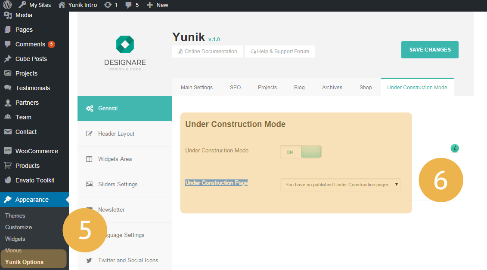
Now you'll have an Under Construction page running on the with your settings, without having the need of installing a plugin.
11. Creating Yunik Menustop
11.1 Wordpress Menus
This theme uses WordPress 3.5.2 Custom Menus.
Go to Appearance > Menus and you will see a panel where you can create new menus.
Create one, add your created pages to it (from the left side panels) and save it.
After this, in the left side you have a Theme Locations drop down box where you can select the Menu.
Choose your newly created menu, click Save and your menu is ready.
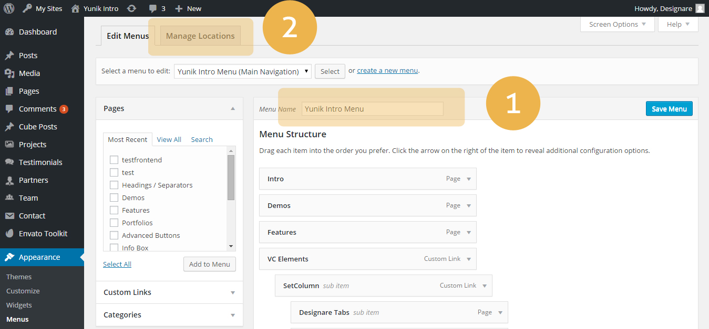
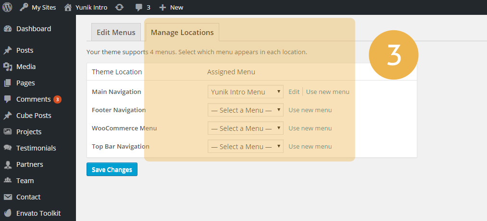
NOTE : You also can create a menu, and set it as a Widget with the "Custom Menus".
11.2 Mega Menu
Setting a Mega Menu, is easy as this:
- 1. Go to Appearance > Menus and you will see a panel where you can create new menus.
- 2. Create one, add your created pages to it (from the left side panels) and save it.
- 3. Select the Mega Menu checkbox so it assumes it as a Mega Menu item.
- 4. If you selected the parent menu as Mega Menu, you'll be set the following b and c options.
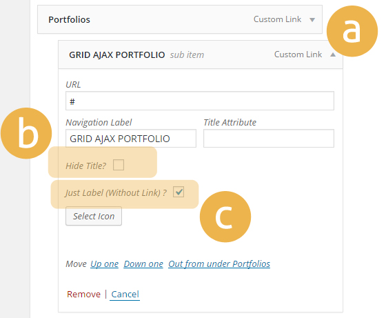
- b - Hide Title?
- c - Just Label (Without Link)?
As it describes above, this should hide the title for dislaying over the Mega Menu area.
This will only show the page created as Sub-Menu Page item from the Mega Menu without having it with a link to a page.
- 5. Now you'll only need to set the pages under the sub menu items so that they become menu items from the sub-menu items from the Mega Menu.
-
- 5.1. Mega Menu menu;
- 5.2. Mega Menu Item (Title or Label);
- 5.3. Mega Menu Sub-Item (The pages linked to each Title or Label);
- 6. The style for these item can be set over Appearance > Yunik Style Options > Menu and select the Just Label (Without Link) section.
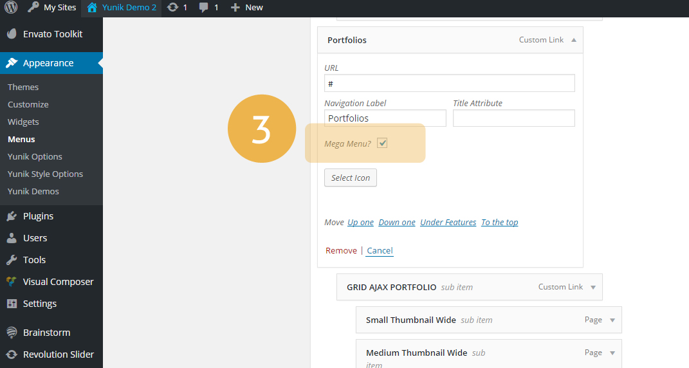
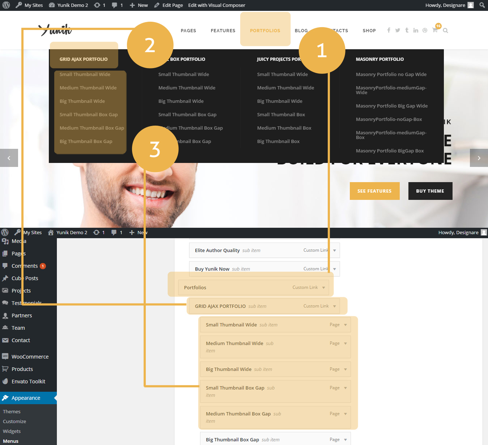
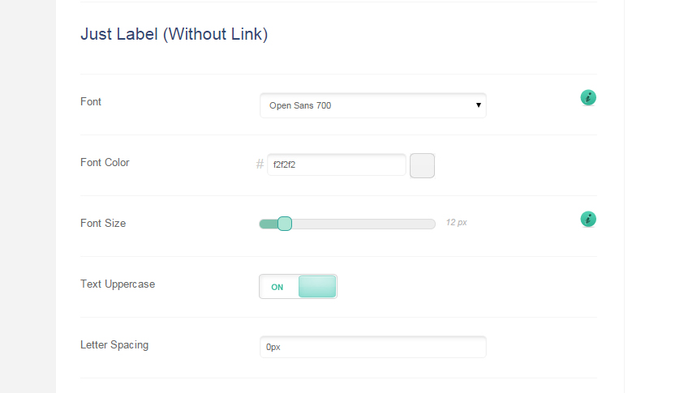
11.3 Sidebar Menus
This theme uses WordPress 3.5.2 Custom Menus.
Go to Appearance > Menus and you will see a panel where you can create new menus.
Create one, add your created pages to it (from the left side panels) and save it.
Choose your newly created menu, click Save and your menu is ready.
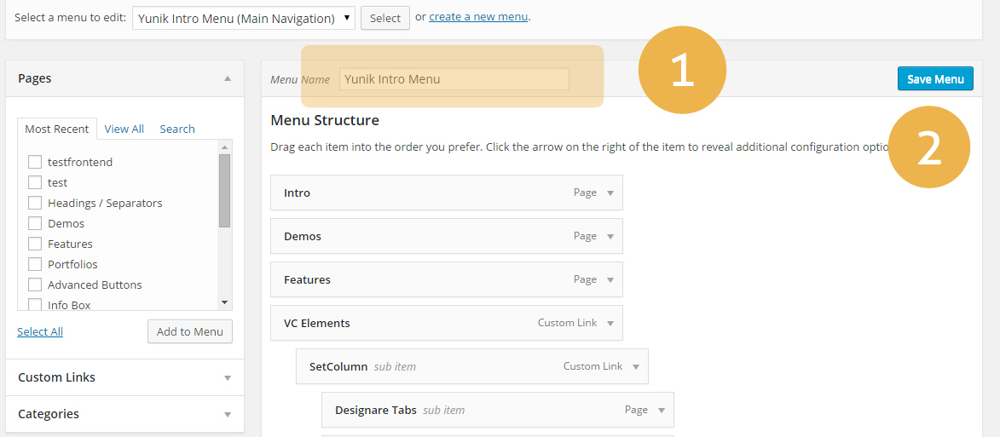
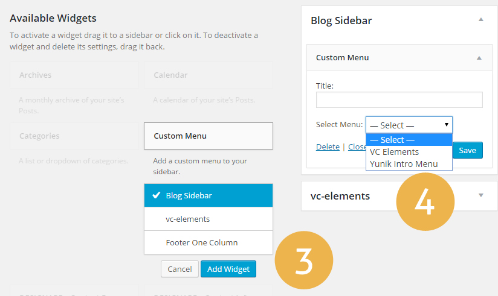
12. Setting Sliderstop
- Upload the Plugin via Wordpress Plugins and Activate it. You can find the revslider.zip inside the folder "Plugins"
- Import rev slider contents if you want it like our demo. You can find the txt files on the download folder > Preview Demo Contents > Revolution Slider
- Create a page with an Homepage-Template
- Select the slider in the page options -> Home Page Settings -> Main Slider
- Hit Publish.
- 1. Create New Revolution Slider or Edit existing created Slider.
- 2. Select existing slider.
- 3. Scroll down to the bottom of the page and go to Troubleshooting, and set "Jquery No Conflict Mode" off.
12.1 Revolution Slider
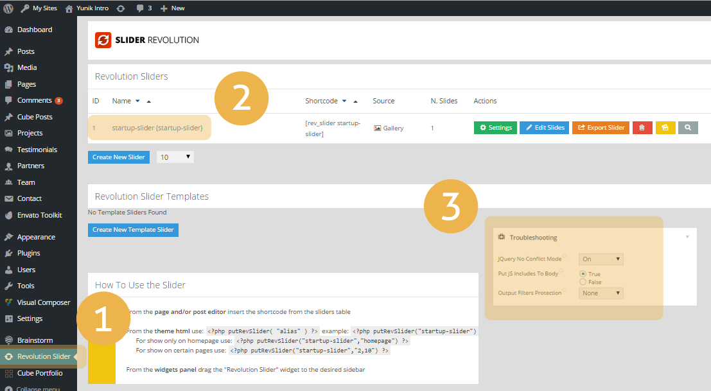
13. Creating Sidebarstop
Yunik allow you add sidebars in two different ways.
- Go to Appearance > Yunik Options.
- Now on Widgets Area > Sidebars.
- Enter a Name for the sidebar.
- Hit Add Sidebar.
- Hit SAVE CHANGES.
Creating the Sidebar in the Admin Panel
- Go to Appearance > Widgets.
- 1. and 2. Drag-and-drop widgets you'd like to use into "Your Sidebar" widget area, here's an example: 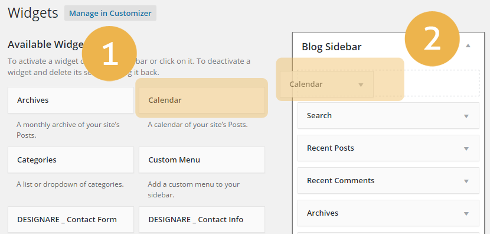
Add Widgets to the Sidebar
- Go to Pages > Add New.
- Go to Page Attributes > Page Layout.
- Choose the page layout that you want.
- Choose the sidebar
12.1 Use Page Layouts
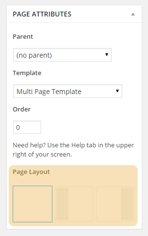
14. Setting Twittertop
- 1. New twitter API requires you to setup the application before pulling the feed out. To do this, go to https://dev.twitter.com/apps/
- 2. Logging in with your twitter account.
- 3. Click to create the access token, then refresh the page.
- 4. Fill the data into the Admin Panel > Twitter & Social Icons > Twitter
- You can activate / deactivate the twitter scroller on Widgets Area > Footer > Twitter Scroller
- Hit SAVE CHANGES.
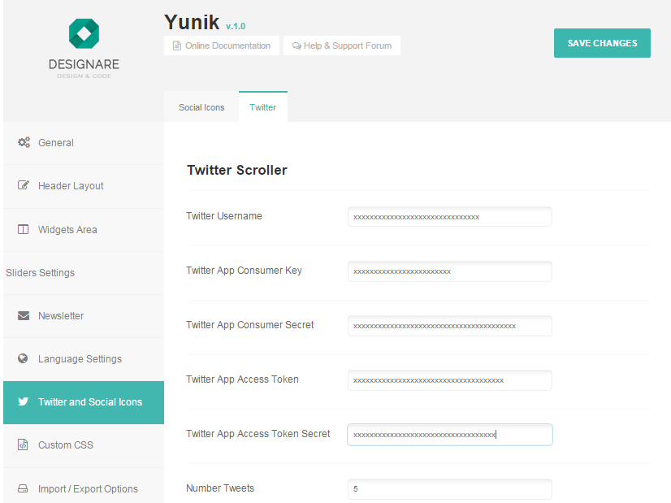
NOTE : You can also use this feature, just by using it as a widget, and setting it where you want in your website!
Also, just by using the Designare Twitter Scroller from inside Visual Composer plugin, this means that you have the possibility to place it inside any page or wherever place you want on your website.
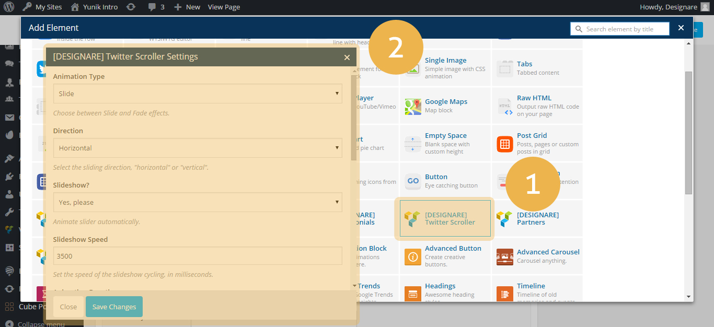
- 1. Open Visual Composer plugin from inside any page you are creating, and select Designare Twitter Scroller.
- 2. Fill up the fields relative to the Twitter section and place it wherever you want. Simple as this!
15. Setting Portfolio Pagestop
Create and edit portfolios
- 1. Go to Cube Portfolio.
- 2. Create a New Portfolio
- 3. Select which Portfolio you want to use.
You will have the following types:
- Juicy Projects
- LightBox Gallery
- Meet the Team
- Full Box
- Masonry
- Blog Posts
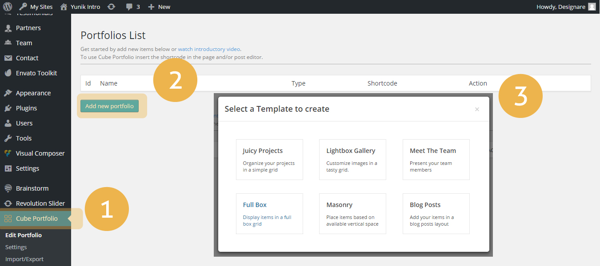
Create and edit Projects
- 1. Go to Projects.
- 2. Create a New Project
Now on the cube portfolio items, and depending of the type of project, Single Page, Single Page Inline or Simple link. Add the full project link in the field "Link"
Add the Portfolio in your Pages
- 1. Open Visual Composer plugin from inside any page you are creating, and select Cube Portfolio shortcode.
- 2.Choose your portfolio and Done!! Your Cube portfolio is set up on your page!
For further information check the documentation here!
16. Setting Blog Pagetop
How we've explained on the 10. Using Page templates under the 10.2 step, you can set your Blog Page easily and you can have two ways of doing so.
Blog Template
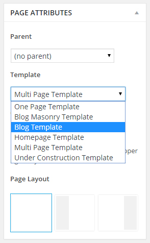
- These posts should be created by the default Posts from wordpress.
- Create the categories and just add them to the created post.
- Now over the page you've created, just scroll a bit down to the end of the page, and go to Blog Style and set your options relative to the Blog Template.
- Click Update button.
Blog Masonry Template
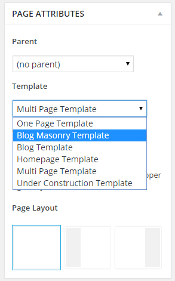
- These posts should be created by the default Posts from wordpress.
- Create the categories and just add them to the created post.
- Now over the page you've created, just scroll a bit down to the end of the page, and go to Blog Style and set your options relative to the Blog Masonry Template.
- Click Update button.
17. Setting Contact Formstop
For setting up new contact pages, we use Contact form 7 plugin. This is an awesome way of setting up contact forms in a simple way and for a few clicks.
Create a Contact Form:
- 1. Go to forms and create a New Form.
- 2. Set the fields with your information.
- 3. Fill up the message fields.
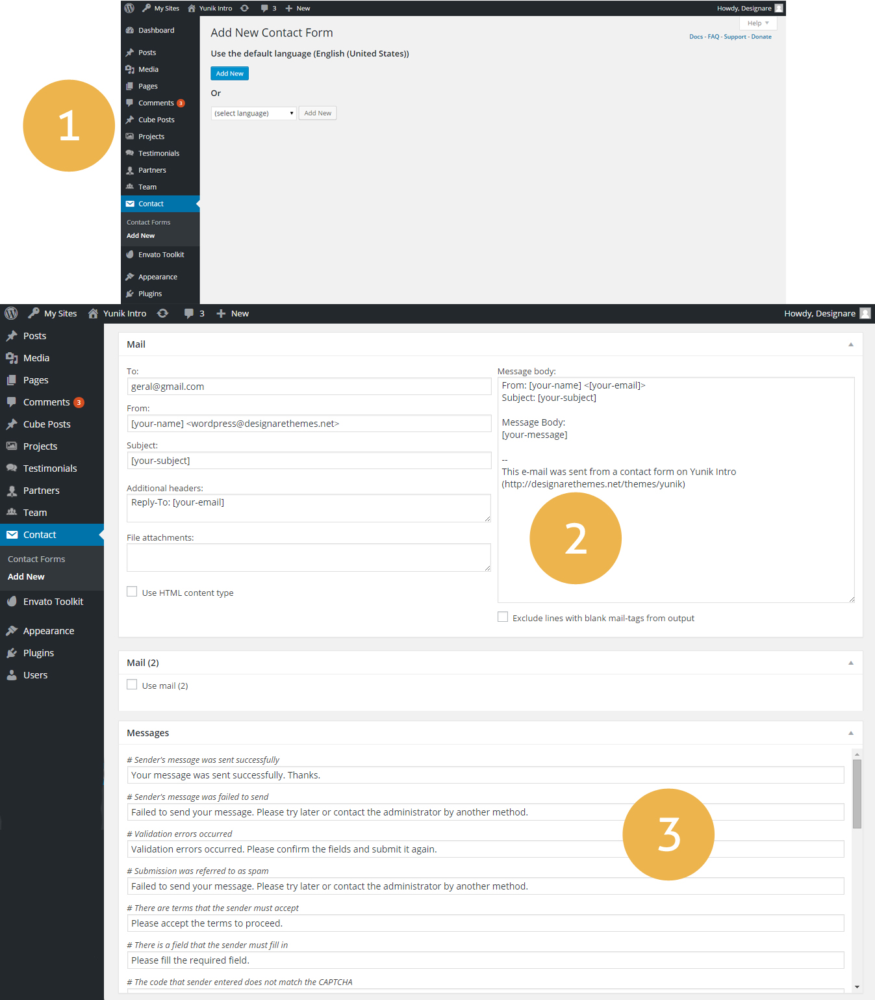
NOTE: Now that you've created the forms, you'll need to go to the page where you want to display it, and just go to Visual Composer and select the Contact Form 7 item, and select which one you want to use.
18. Setting Testimonialstop
This are the steps you need to take for adding testimonials:
- Go to Testimonials > Add New.
- Go to the page where you want to use it and under Visual Composer, just select the Designare Testimonials.
- You will be prompted which style you intend to use. You'll have the Slider and the fixed option for it.
- This will generate your shortcode, that can be used wherever you want to.
How to create them:
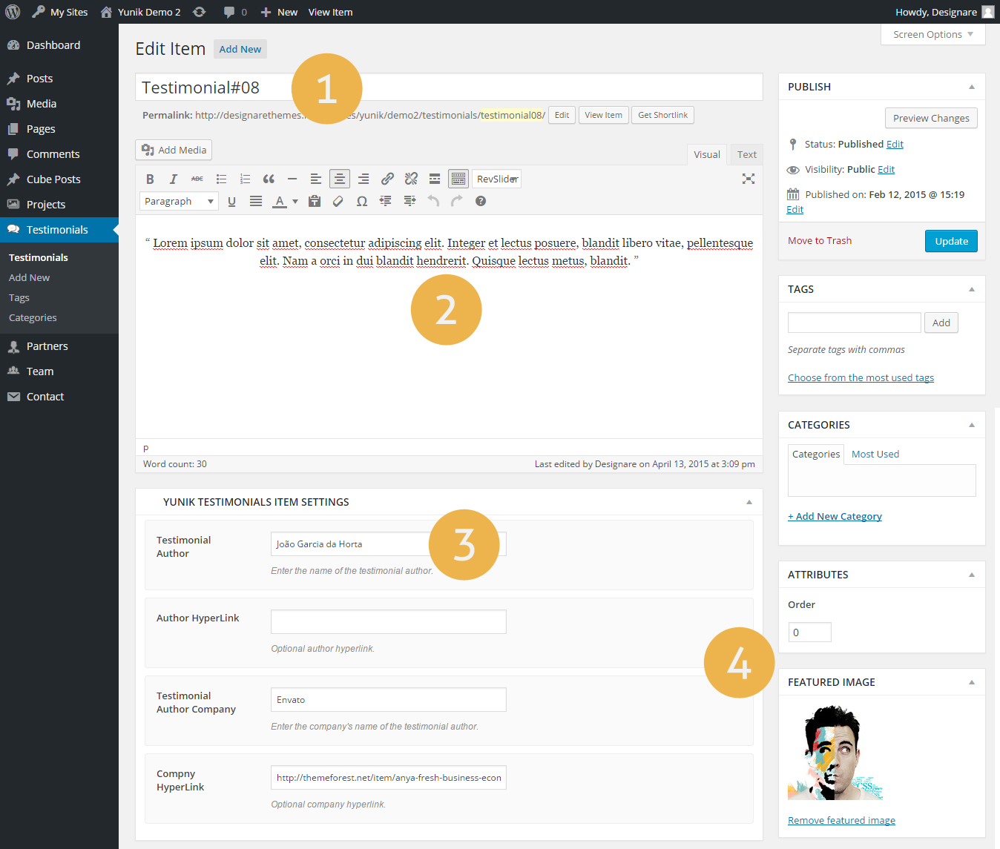
1. Add your testimonial menu name.
2. Add the testimonial message.
3. Go to Testimonial Author and set the authors name.
4. Go to Testimonial Author Company and set the authors company name.
5. After you have all of this set up, just add your testimonial featured image, and then just save changes.
How to set it up:
19. Setting Partnerstop
- Go to partners > Add New.
- 1. Enter the partners name.
- 2. Enter the partners website link.
- 3. Enter the partners category to which he is related.
- 4. Enter the partners image / logo.
- 5. After you have all of this set up, just add your testimonial featured image, and then just save changes.
How to create them:
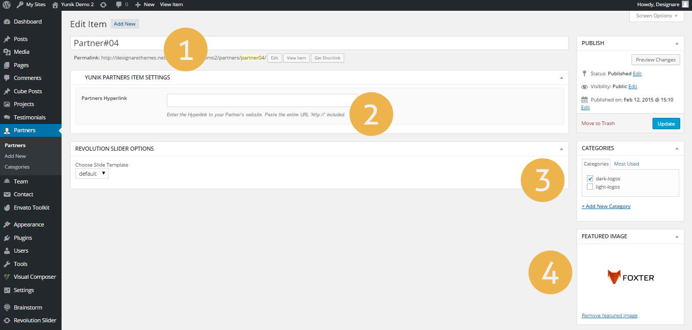
20. Setting Team Memberstop
- Go to Team > Add New.
- Go to the page where you want to use it and under Visual Composer, just select the Designare Team.
- This will generate your shortcode, that can be used wherever you want to.
How to create them:
1. Add your team member name.
2. Add your personal info.
3. After you have all of this set up, just add your team member featured image.
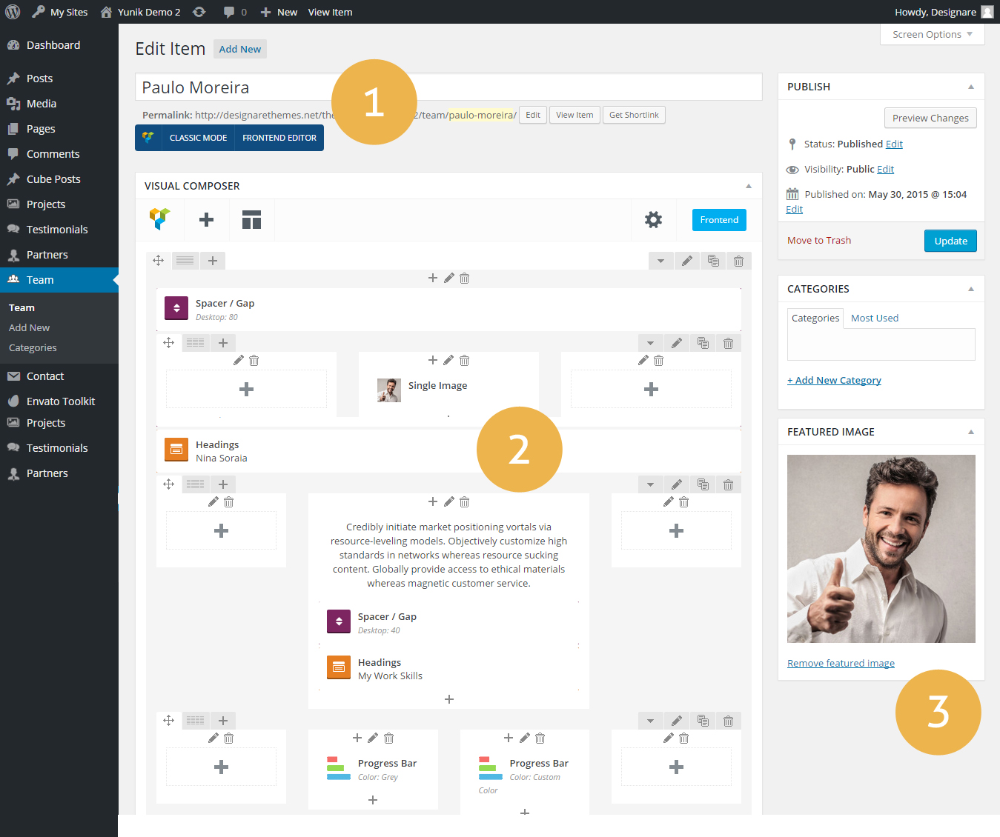
How to set it up:
21. Setting MailChimp Newslettertop
- 1. Go to the page where you want to use it and under Visual Composer, just select the Designare Newsletter.
- 2. You can use it within the Widgets Area. You only need to drag / drop it into the widget area you want to use. This means that you are able to use it on every place you desire to show your newsletter form.
Check out all the step you need to take so you can have your newsletter on your website:
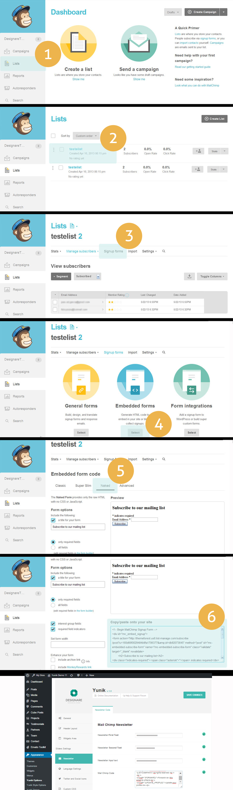
How to create it:
1. Open your MailChimp account and select Lists.
2. Select your favorite email listing.
3. Select Signup Forms.
4. Select Embedded Forms.
5. Select from Embedded Form Code, the Naked one.
6. Copy your generated code.
7. Go to Appearance > Yunik Options > Newsletter.
8. Paste your generated code.
You have two ways on how to set it up:
22. Translation Ready
So you can replace the theme language to your defined language, follow the next steps:
- Edit the en_EN.po file (Yunik_Wordpress/lang folder) using the Poedit software.
- Save the file with the name of your language (for example: fr_FR for French) on a folder called "languages" on the "wp-content" folder of your wordpress installation.
- Edit the wp-config.php file, on the root of your wordpress theme, and change the line 72 to the name of the file you created. For example: "define('WPLANG', 'fr_FR');"
If you want help other users (and us) improving our theme, you can send your translated .mo .po files to Designare Themes.
We would really appreciate it!